- Formuła 1
- Zespoły
- Red Bull Racing

Liczba Pole Positions 72
Najszybsze okrążenia 75")
- Mercedes

Liczba Pole Positions 127
Najszybsze okrążenia 85")
- Ferrari

Liczba Pole Positions 223
Najszybsze okrążenia 253")
- Mclaren

Liczba Pole Positions 156
Najszybsze okrążenia 160")
- Alpine

Liczba Pole Positions 20
Najszybsze okrążenia 15")
- Alpha Tauri

Liczba Pole Positions 1
Najszybsze okrążenia 2")
- Aston Martin

Liczba Pole Positions 1
Najszybsze okrążenia Nie dotyczy")
- Alfa Romeo Racing ORLEN

Liczba Pole Positions 1
Najszybsze okrążenia 5")
- Haas

Liczba Pole Positions Nie dotyczy
Najszybsze okrążenia 2")
- Williams

Liczba Pole Positions 129
Najszybsze okrążenia 133")
- Red Bull Racing
- Zawodnicy
-
Max Verstappen

Najwyższa pozycja kwalifikacyjna 1
Data urodzenia 30.09.1997
Miejsce urodzenia Hasselt, Belgia")
-
Lewis Hamilton
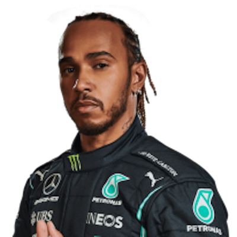 -
Valtteri Bottas
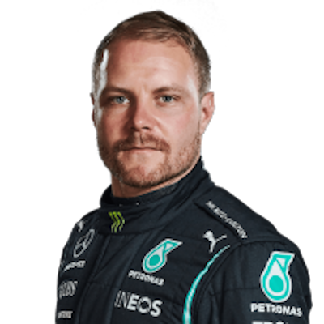 -
Sergio Perez
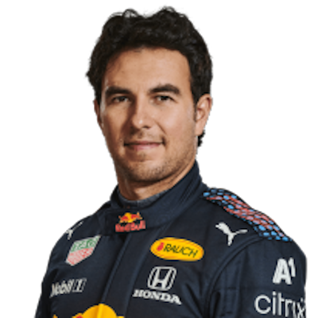 -
Lando Norris
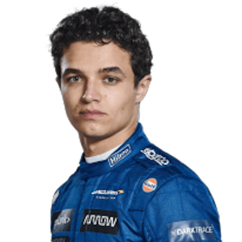 -
Charles Leclerc

Najwyższa pozycja na starcie 1
Data urodzenia 16.10.1997
Miejsce urodzenia Monte Carlo, Monako")
-
Daniel Ricciardo
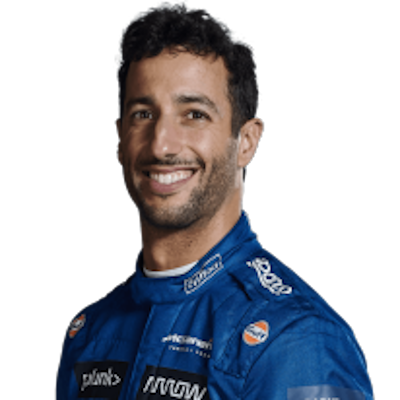 -
Carlos Sainz
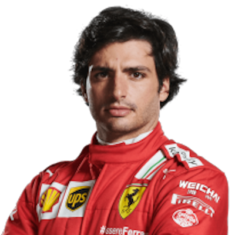 -
Pierre Gasly
-
Fernando Alonso
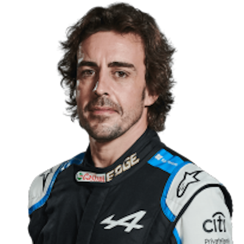 -
Esteban Ocon
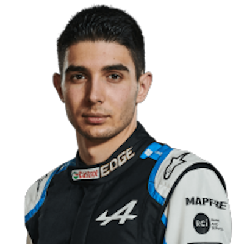 -
Sebastian Vettel
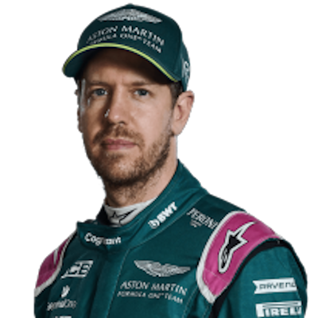 -
Yuki Tsunoda
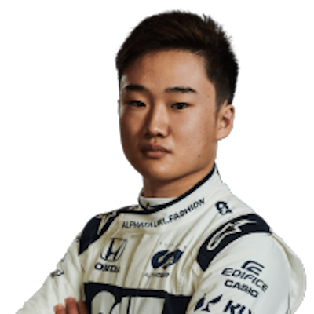 -
Lance Stroll
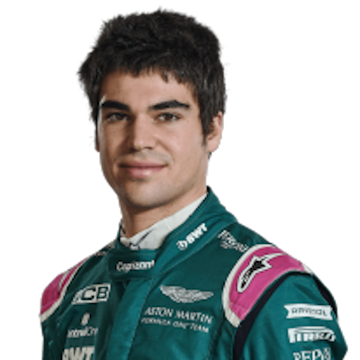 -
George Russell
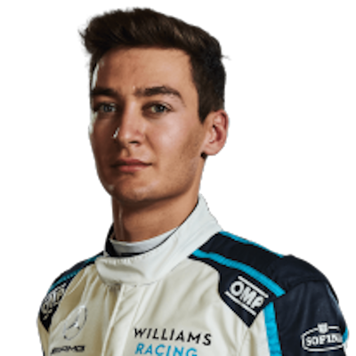 -
Kimi Raikkonen
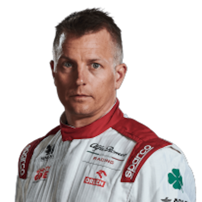 -
Antonio Giovinazzi
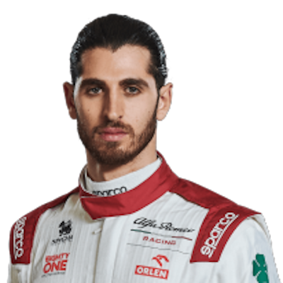 -
Nicholas Latifi
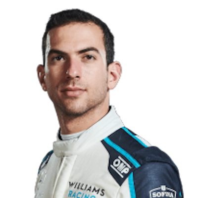 -
Mick Schumacher

Najwyższa pozycja na starcie 14
Data urodzenia 22.03.1999
Miejsce urodzenia Vufflens-le-Château, Szwajcaria")
-
Robert Kubica
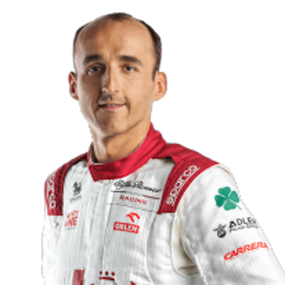 -
Nikita Mazespin

Najwyższa pozycja kwalifikacyjna 15
Data urodzenia 02.03.1999
Miejsce urodzenia Moskwa, Rosja")
-
Max Verstappen
- Przykładowe tory na których są rozgrywane zawody
-
Losail International Circuit (Katar)
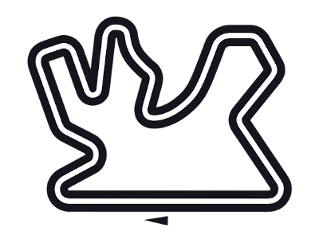 -
Bahrain International Circuit (Bahrajn)
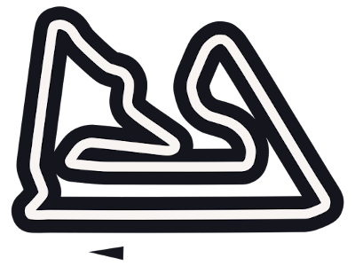 -
Autódromo Internacional do Algarve (Portugalia)
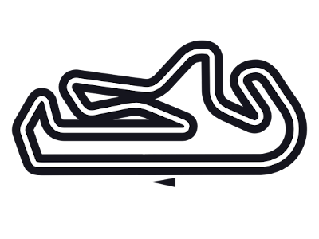 -
Autodromo Enzo e Dino Ferrari (Imola, Włochy)
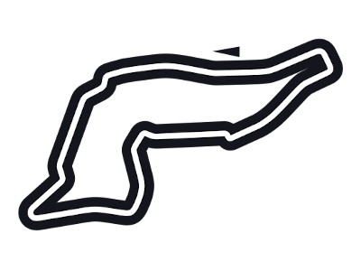
-
Losail International Circuit (Katar)
- Zespoły
- Formuła 2
- Zespoły
- Prema Racing
- UNI-ViRTUOSI
- Carlin
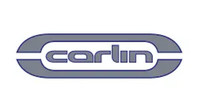 - Hitech Grand Prix
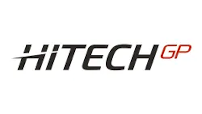 - ART Grand Prix
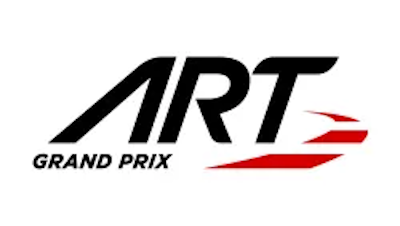 - MP Motorsport
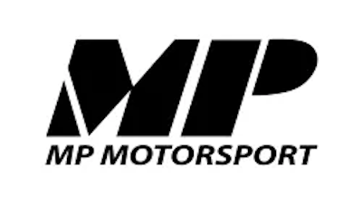 - Charouz Racing System
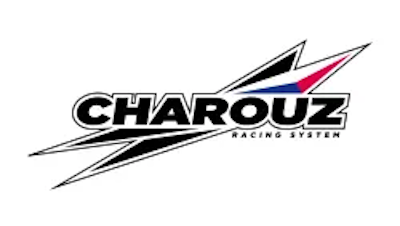 - DAMS
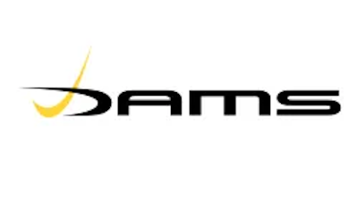 - Campos Racing
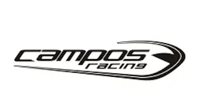 - HWA Racelab
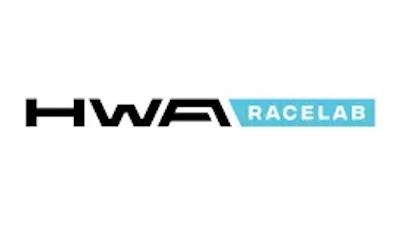 -
Trident
- Prema Racing
- Zawodnicy
-
Robert Shwartzman
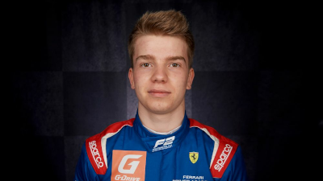 -
Oscar Piastri
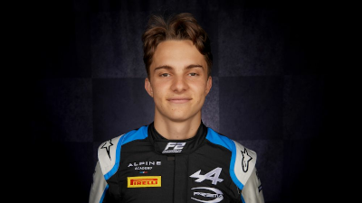 -
Guanyu Zhou
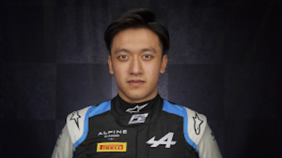 -
Felipe Drugovich

-
Dan Ticktum
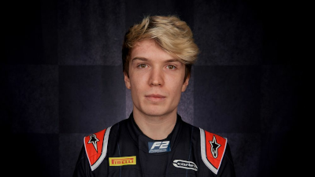 -
Jehan Daruvala
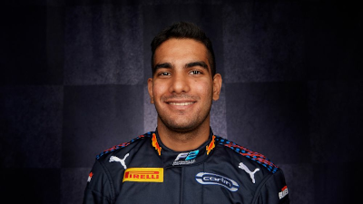 -
Liam Lawson
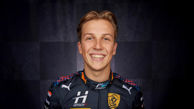 -
Jüri Vips
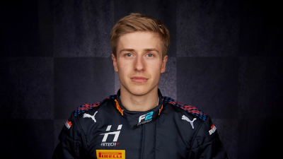 - I tak dalej...
-
Robert Shwartzman
- Przykładowe tory na których są rozgrywane zawody
-
Baku City Circuit (Azerbejdżan)
 w 2017 roku")
-
Silverstone Circuit (Wielka Brytania)
 w 2019 r.")
-
Sochi Autodrom (Rosja)
 w 2018 roku")
-
Yas Marina Circuit (Zjednoczone Emiraty Arabskie)
 w 2017 roku (OBWÓD 5,554 KM)")
-
Baku City Circuit (Azerbejdżan)
- Zespoły
- DTM
- Zespoły
- Team Abt Sportsline
- Team Rosberg
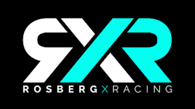 - Team Abt
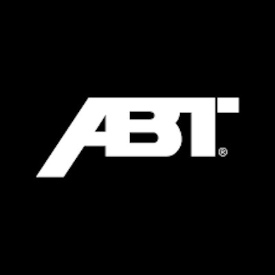 - Walkenhorst Motorsport
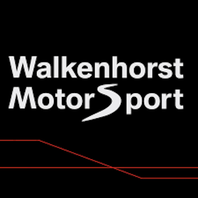 - ROWE Racing
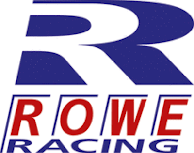 - AlphaTauri AF Corse
- Red Bull AF Corse
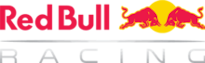 - T3 Motorsport
- JP Motorsport
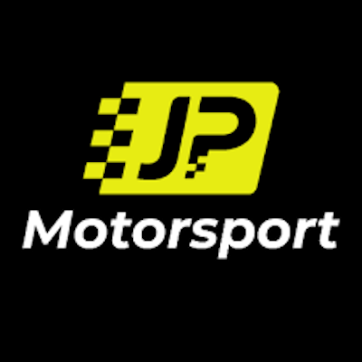 - SSR Performance
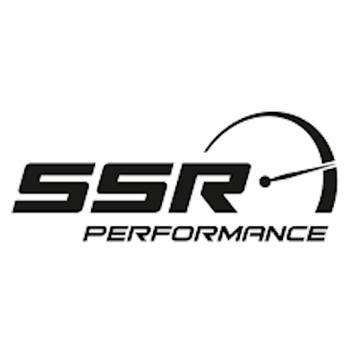 -
Mercedes-AMG Team Winward
- Team Abt Sportsline
- Zawodnicy
-
Nick Cassidy
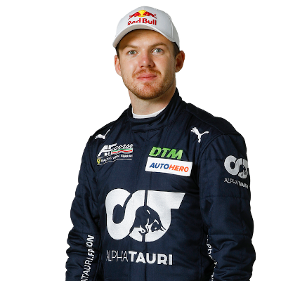 -
Sophia Flörsch
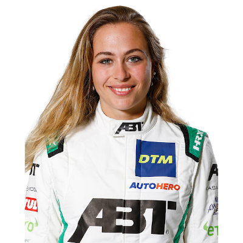 -
Liam Lawson
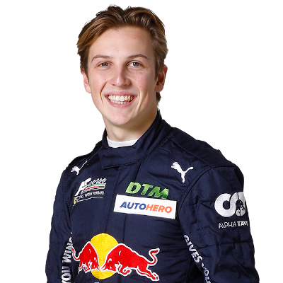 -
Marco Wittmann
, sięgnął po tytuł wicemistrzowski, ulegając jedynie bezkonkurencyjnemu Meksykaninowi, Estebanowi Gutiérrezowi.")
- I tak dalej...
-
Nick Cassidy
- Przykładowe tory na których są rozgrywane zawody
-
Autódromo Internacional do Algarve Portimão (Portugalia)
 -
Lausitzring (Niemcy)
 -
Assen (Holandia)
 -
Red Bull Ring (austria)
-
Autódromo Internacional do Algarve Portimão (Portugalia)
- Zespoły
- IndyCar
- Zespoły
- A. J. Foyt Enterprises
- Andretti Autosport
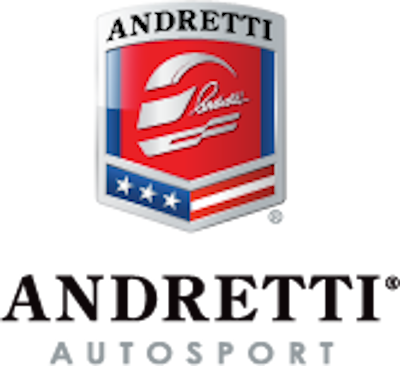 - Arrow McLaren SP

- Carlin
- Chip Ganassi Racing
- Dale Coyne Racing
- Ed Carpenter Racing
- Juncos Hollinger Racing

- Meyer Shank Racing

Michael Shank
Jim Meyer
Liberty Media
Dyrektor
Michael Shank
Baza
Pataskala, Ohio
Uczestnictwo w serii wyścigów
Seria IndyCar
IMSA SportsCar Championship
Sponsorzy
AutoNation, SiriusXM
Producent
Seria IndyCar: Honda
Założony
1989")
- Rahal Letterman Lanigan Racing
-
Team Penske
- A. J. Foyt Enterprises
- Zawodnicy
-
Alex Palou

-
Josef Newgarden
. W roku 2007 zadebiutował w głównej edycji tego serialu. Wygrawszy dwa wyścigi, zmagania w niej zakończył na 6. pozycji. W kolejnym sezonie, sięgnął po tytuł wicemistrzowski, po drodze wygrywając w trzech wyścigach. Oprócz tego gościnnie wystąpił w innych lokalnych mistrzostwach, w których również spisał się znakomicie. Na koniec sezonu wystartował w Festiwalu Formuły Ford, gdzie nieoczekiwanie zwyciężył, w klasie „Kent Class”.")
-
Pato o'ward
-
Scott Dixon
- I tak dalej...
-
Alex Palou
- Przykładowe tory na których są rozgrywane zawody
-
Streets of St. Petersburg (Rosja)
-
Texas Motor Speedway (USA)
-
Streets of Long Beach (USA)
-
Barber Motorsports Park (USA)
-
Streets of St. Petersburg (Rosja)
- Zespoły